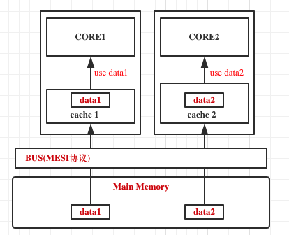

对照实验
代码
1 |
|
代码说明：
这段代码主要就是申请了一个长度为THREAD_NUM，类型为Sharing或者PaddingSharing或者ContendedSharing的数组，然后对数组进行写操作，一轮1亿，一共THREAD_NUM轮。
实验对照
Sharing 4线程
当类型为Sharing，线程数为4的时候，输出：
1 | time cost : 39413 |
cpu history:

PaddingSharing 4线程
当类型为PaddingSharing，线程数为4的时候，输出：
1 | time cost : 8592 |
cpu history:

PaddingSharing 4线程
当类型为PaddingSharing，线程数为4的时候，输出：
1 | time cost : 8592 |
cpu history:
ContendedSharing 4线程
当类型为PaddingSharing，线程数为4的时候，输出：
注意，这个时候需要在jvm配置一个参数，让@Contended生效：
1 | -XX:-RestrictContended |
1 | time cost : 8662 |
cpu history:

分析
我的电脑是4和8线程的，CPU缓存行(cache line)是64字节。如果需要看自己的电脑是几核几线程，Mac可以输入命令：
1 | sysctl -a | grep ".cpu." |

缓存行
缓存行是CPU高速缓存里面的一个block，不同的CPU高速缓存的缓存行大小不一定，但是都是2的整数次幂，最常见的就是64字节。根据空间局部性原理，所以每次读取主内存中的数据是一个缓存行大小。
耗时分析
可以看到类型为Sharing的时候，耗时最多，类型为PaddingSharing和ContendedSharing的时候耗时差不多。他们之间差不多相差了4倍，那和设置的线程数是4线程之间有关系吗，下面来分析一下。
计算对象大小
要分析其原因，就要先看一下怎么计算一个对象的大小。
对象是由对象头和实例数据还有填充数据组成的。
对象头

对象头里面又分了Mark Word，Klass Pointer，如果是数组对象，还有一个记录Array Length的部分。
关于Mark Word，可以看一下Hotspot的源码解释说明，markOop.hpp:
1 | // 32 bits: |
在32位机器里面，对于普通对象，有25位用于记录hash code，4位用来记录分代年龄，是否偏向锁1位，锁标记2位。对于其他情况，可以看上面的注释说明，本篇只需要知道对象的组成和怎么计算即可，如果需要详细知道对象的组成以及各个位表示什么，可以看Hotspot的源码解释，后续有时间也会写一篇关于对象组成的博文。
所以在32位机器里面，Mark Word占了4字节，如果是64位机器的话，就是8字节。
配一个图，来自网络：

Klass Pointer是用来指向当前类对象所属的类指针。因为jvm在设计的时候采用的是OOP-KLASS模型，注意这里的OOP不是面向对象，而是普通对象指针。
在32位机器里面，寻址范围只需要32位大小即可，所以占了4位。64位机器，需要的寻址范围是64位，所以在没有开启指针压缩（默认是开启的）的时候需要8位，开启了指针压缩的话，只需要4位。
所以这里Klass Pointer占了4个字节。
计算大小
实例数据是long类型的，一个long占用了8个字节。
因为jvm规范要求每一个起始位置必须是8的整数倍，所以还有一个Padding
所以Sharing对象占用的大小是：8+4+8 = 20，不是8的整数倍，所以还要填充4位，也就是Sharing对象占了24位大小。
怎么造成的伪共享
这样一来，一个缓存行里面就可以放两个Sharing对象。我们都知道，数组在分配空间的时候是连续的。所以在工作的时候，CPU和缓存数据之间的关系就是下面这种情况：

从图上可以看出，core1想使用data1，core2想使用data2，同时data1和data2处于同一个缓存行中。由于实例数据经过volatile修饰，会表现出强MESI缓存一致性，所以在同一时刻，这两个core是不可以共同使用这一个缓存行的。
如果清楚MESI缓存一致性协议就会知道：当同一缓存行处在两个不同的高速cache中时，这个时候两个cache中的这个缓存行就会处于S(share共享的)状态。此时，每个core都会向总线(BUS)发出让其他core的cache失效这条缓存行的请求，也就是让其他cache中的这条缓存行处于I(失效的)状态。所以这个时候BUS就会收到两个或者多个这样的请求，这个时候BUS总线就会启动总线裁决机制，来判定到底是让哪一个core对应的缓存持有的这条缓存行失效。裁决被失效的缓存行必须接受这个结果，获胜的core会继续执行自己的操作，然后将cacheline设置为M(已经修改的)。我们假设是core1获胜，当core1执行完自己的操作后，将对应的缓存行写入主内存，这个操作是立即执行的，一经修改完，就会立即执行，因为core1会探测到总线上面有其他请求这条缓存行的core。写回主内存后，core2会读取到这条缓存行，然后执行自己的操作。
那么在core1操作这条缓存行，一直到写回主存的时候，core2在干什么呢？core2这个时候其实处于饥饿状态，等待core1操作完cacheline并写回主存。所以这个时候整个过程的并行操作，就或多或少的退化成了串行操作。这就是上面说的伪共享。
如何解决伪共享
上面的代码，将操作的对象改为PaddingSharing和ContendedSharing，它们的时间都差不多是Sharing的四分之一。下面来分析一下为什么会出现这种情况。
根据上面计算对象大小的方法，可以计算出PaddingSharing一个对象的大小：
对象头：Mark Word 8byte；Klass Pointer 4byte。一共12byte
实例数据：一共6个long型数据，6 × 8 = 48byte
填充数据：12 + 48 = 60，距离64相差4byte，所以填充数据4个byte
算下来一个PaddingSharing对象的大小是64byte，刚好是一个缓存行的大小。那么为什么计算速度会更快呢。下面还是画图分析一下：

可以看出，这个时候core1需要的对象对应了一个缓存行，core2需要的对象对应了一个缓存行，它们之间的操作时互不影响的，这个时候就达到了并行的效果。添加@Contended注解，会在对象前后各padding128位来达到这个目的。